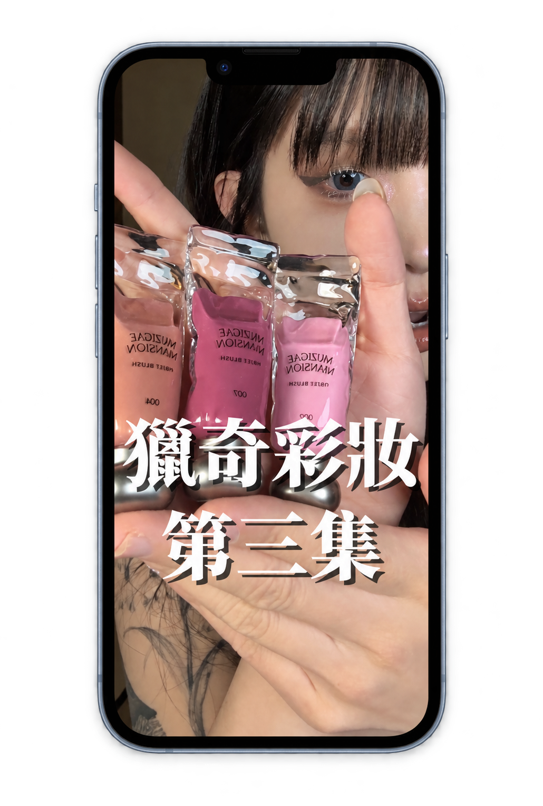

PROJECT 01 / BEAUTY / CREATOR COLLABORATION
뷰티의 매력을 현지의 언어로
Muzigae Mansion · VEASLY
제품의 매력과 구매 정보를 함께 전달하기
한국 상품을 대만 고객에게 소개하는 VEASLY에서 뷰티 크리에이터 협업을 진행했습니다. 이 사례는 Muzigae Mansion의 색조 제품을 사용하고 구매 경험을 소개한 콘텐츠입니다.
게시물은 한국 상품을 구매하기 어려운 상황과 구매 과정에 대한 정보를 함께 다룹니다. 제품의 매력과 서비스 사용 방법을 대만 소비자가 이해할 수 있게 연결하는 것이 핵심입니다.
팔로워 수보다, 시선을 끄는 콘텐츠의 가능성
뷰티 콘텐츠에는 단순한 언박싱이나 성분 소개가 많았습니다. 비슷한 영상이 반복되는 가운데, 이 크리에이터가 새롭게 시작한 ‘특이한 화장품’ 시리즈에 주목했습니다. 독특한 제품을 발견하고 직접 사용해 보는 구성이 시청자의 호기심을 끌 수 있다고 판단했습니다.
앞선 두 편의 반응도 긍정적이었습니다. 이 흐름에 Muzigae Mansion의 독특한 패키지가 자연스럽게 어울린다고 보고, 바로 크리에이터에게 협업을 제안했습니다. 팔로워는 4만 명대였지만, 협업 영상은 약 146만 회의 조회수를 기록했습니다.
크리에이터의 규모뿐 아니라, 어떤 주제와 표현 방식이 사람들의 관심을 끄는지 살폈습니다. 새로운 콘텐츠의 가능성을 초기 반응에서 읽고, 제품과 연결해 빠르게 협업으로 이어간 사례입니다.
콘텐츠의 관심이 브랜드 탐색과 구매로
영상 게시 이후, VEASLY 사이트 내 Muzigae Mansion 검색이 눈에 띄게 늘었고 해당 브랜드의 상품 주문도 발생하기 시작했습니다.
구매는 영상에서 소개한 제품에만 머무르지 않았습니다. 같은 브랜드의 다른 상품으로도 이어졌습니다. 콘텐츠로 생긴 관심이 브랜드 전반의 탐색으로 확장되며, 다른 제품의 구매까지 자연스럽게 연결되는 흐름을 확인했습니다.
콘텐츠의 특징을 읽고, 협업과 상품을 제안하다
크리에이터의 영상에서 독특한 제품으로 호기심을 끄는 특징을 발견하고, 새롭게 시작한 ‘특이한 화장품’ 시리즈에 제품을 자연스럽게 소개하는 협업을 제안했습니다.
이후 시리즈의 콘셉트에 어울린다고 판단한 상품 몇 가지를 직접 골라 추천했습니다. 제품의 독특한 형태와 패키지가 영상의 소재가 될 수 있는지 살피며, 크리에이터의 콘텐츠와 상품의 매력을 연결했습니다.
콘텐츠에 남은 반응
제공된 캡처에서 조회수 약 146만 회, 좋아요 약 1.2만 개를 확인했습니다.
